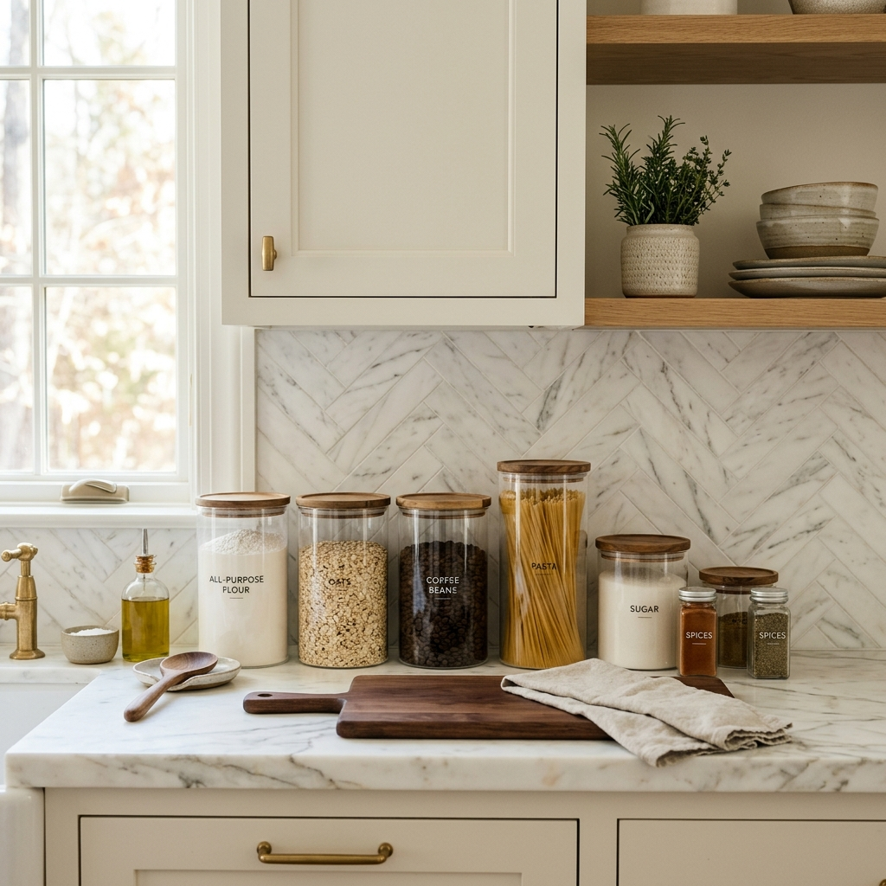
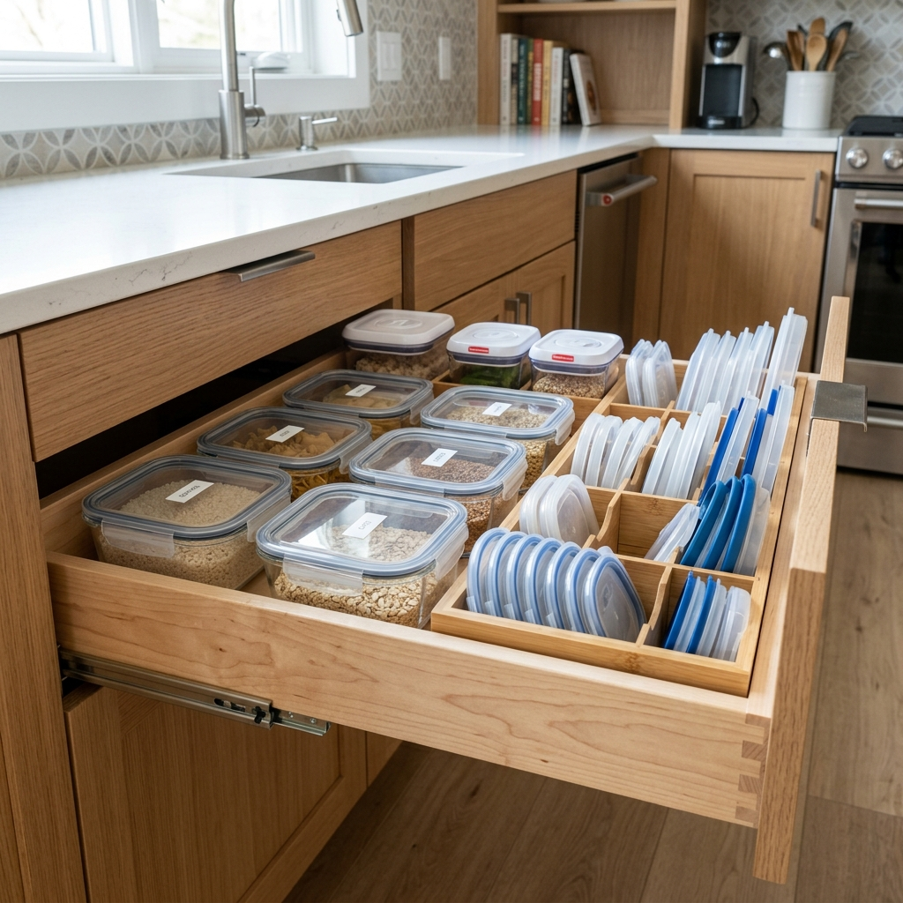
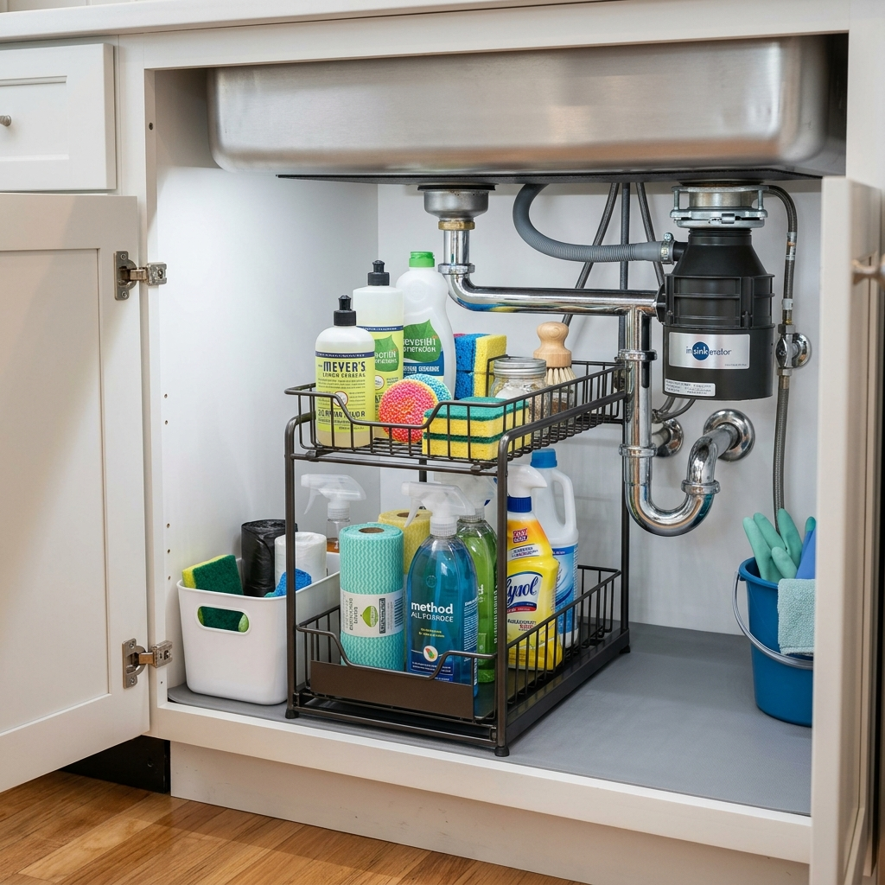
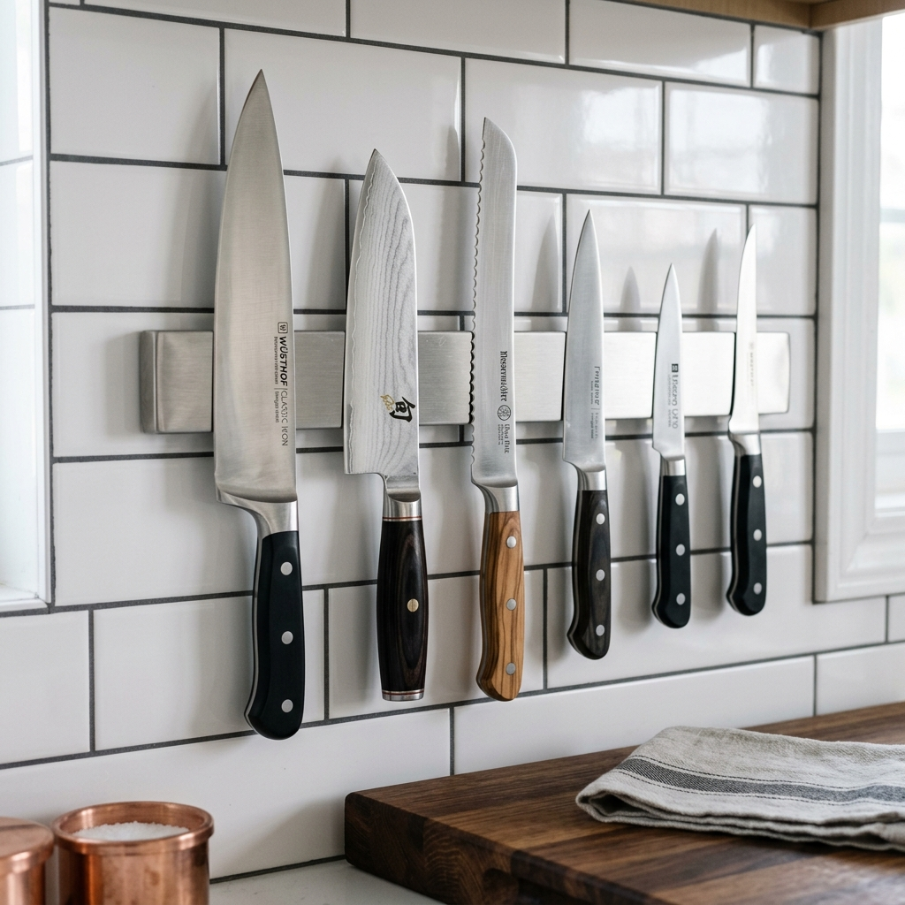
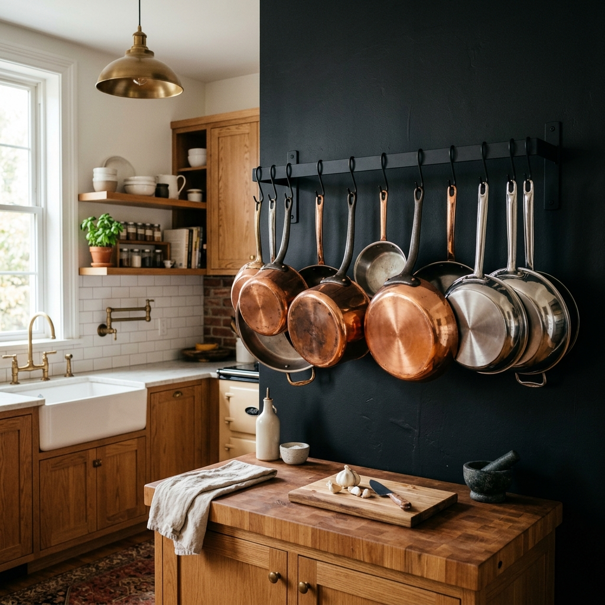
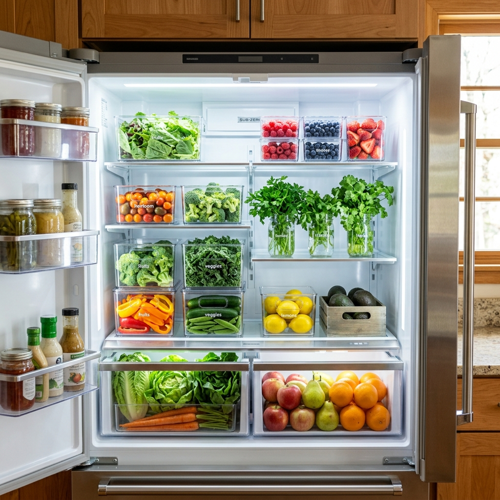

10 Genius Kitchen Organization Hacks You Can Buy on Amazon (Smart Storage Solutions)
Have you ever opened a cabinet only to play a dangerous game of dodgeball with falling Tupperware? Or maybe you’ve spent ten minutes digging through a messy drawer just to find a single measuring spoon? If your kitchen feels more like a chaotic storage unit than a place to cook, you are not alone.
A disorganized kitchen drains your time and your joy of cooking. But here is the good news: you don't need a massive renovation to fix it. With a few strategic kitchen organization hacks, you can completely transform how your space functions.
In this guide, we are sharing practical, space-saving kitchen hacks that you can implement this weekend. Even better? Every single one of these smart kitchen organization tools is just a click away. Let's dive into the ultimate declutter kitchen ideas that will make your daily routine a breeze.

1. Maximize Cabinet Space with Pull-Out Shelves
The Problem it Solves
Deep lower cabinets are notorious for becoming black holes where blenders and mixing bowls go to be forgotten. Bending down and rummaging through the dark is frustrating and hurts your back.
The Solution Explanation
Installing sliding, pull-out shelves instantly turns a deep, dark cabinet into an accessible drawer. You simply pull the track forward, bringing everything from the back of the cabinet right out into the light.
Practical Use Case
Use this for heavy items like stand mixers, Dutch ovens, or large stacks of dinner plates. It makes lifting heavy cookware much safer and easier.
Pro Tip: Always measure the width, depth, and height of your cabinet twice before ordering. Pay attention to the hinges, making sure they won't block the shelf from sliding out.
Recommended: Heavy-duty sliding cabinet organizer
2. Tame the Tupperware Drawer with Expandable Dividers
The Problem it Solves
Food storage containers and their mismatched lids create the ultimate messy drawer. They slide around every time you open the drawer, making it impossible to find a matching set.
The Solution Explanation
Expandable bamboo drawer dividers lock into place, creating custom compartments inside any standard drawer. This allows you to separate lids from containers effortlessly.
Practical Use Case
Use one section for square containers, one for round containers, and line up the lids vertically in a narrow section so they file like folders.
Pro Tip: Use a tiny dab of museum gel or removable mounting putty under the ends of the dividers if your drawers slam hard; this ensures they never slip out of place.
Recommended: Bamboo drawer dividers for kitchen

3. Create Vertical Space with Stackable Pantry Bins
The Problem it Solves
Pantry shelves usually have a lot of empty, wasted space between the top of your food boxes and the next shelf. Bags of flour and pasta end up piled on top of each other, creating a messy avalanche.
The Solution Explanation
Airtight, stackable containers allow you to ditch the bulky cardboard packaging and stack your food vertically. This is one of the most effective pantry organization ideas for maximizing every inch of a small space.
Practical Use Case
Perfect for decanting dry goods like cereal, rice, pasta, sugar, and baking supplies.
Pro Tip: Use a chalk pen or aesthetic pantry labels to write the expiration date on the bottom or back of the container so you always know when food is going bad.
Recommended: Clear stackable food storage containers
4. Utilize the Dead Space Under the Sink
The Problem it Solves
Under sink organization in the kitchen is notoriously tricky because the plumbing pipes get in the way, leaving you with an awkward, hard-to-use space.
The Solution Explanation
An expandable, tiered under-sink storage rack features adjustable shelves that can be moved around to fit perfectly around your garbage disposal and pipes.
Practical Use Case
Store dish soap, dishwasher pods, scrub brushes, and trash bags. Keep your daily-use items on the top tier and bulk refill bottles on the bottom tier.
Pro Tip: Line the bottom of the cabinet with a waterproof silicone mat before installing the rack. It protects your wood from leaks and spills!
Recommended: Under sink organizer rack

5. Organize Spices with a Tiered Drawer Insert
The Problem it Solves
Digging through a crammed overhead cabinet to find the garlic powder while your food is burning on the stove is a chef's nightmare.
The Solution Explanation
Move your spices to a drawer near the stove and use a tiered acrylic insert. This lays the spice jars out at a slight angle, allowing you to see every single label at a glance without moving them.
Practical Use Case
Ideal for organizing standard-sized spice jars, salts, and small baking extracts right where your prep zone is.
Pro Tip: Buy a pack of uniform, empty glass spice jars and transfer your store-bought spices into them. Alphabetize them to make cooking incredibly fast and stress-free.
Recommended: Tiered spice drawer organizer acrylic
6. Free Up Counters with a Magnetic Knife Strip
The Problem it Solves
Wooden knife blocks are bulky, take up valuable counter space, and harbor bacteria in their deep, hard-to-clean slots.
The Solution Explanation
A wall-mounted magnetic knife strip holds your knives securely against the wall or backsplash. This is one of the best small kitchen organization tips because it utilizes completely empty wall space.
Practical Use Case
Hang your chef’s knife, paring knife, kitchen shears, and even metal tongs directly over your main cutting board station.
Pro Tip: Always pull the knife off the magnetic strip by twisting the spine (the dull back edge) first, rather than dragging the sharp edge against the metal, to keep your blades sharper longer.
Recommended: Stainless steel magnetic knife bar

7. Corral Cleaning Supplies on a Lazy Susan
The Problem it Solves
Bottles of cooking oil or cleaning sprays often get pushed to the back of cabinets. Reaching for them usually results in knocking over three other bottles in the process.
The Solution Explanation
A Lazy Susan (a spinning turntable) allows you to rotate the shelf to easily access items hiding in the back, meaning nothing ever gets lost in the dark corners again.
Practical Use Case
Perfect for holding olive oil, vinegar, and sauces next to the stove, or for organizing surface cleaners and sponges under the sink.
Pro Tip: Look for a turntable that has a raised lip or a non-skid rubber lining on the bottom so your glass bottles don't fly off when you spin it quickly.
Recommended: Non skid lazy susan turntable
8. Hang Pots and Pans to Save Cabinet Room
The Problem it Solves
Pots and pans are the clunkiest items in any kitchen. Stacking them causes scratches, and their long handles make shutting cabinet doors a hassle.
The Solution Explanation
A heavy-duty ceiling or wall-mounted pot rack gets these bulky items out of your cabinets entirely. It frees up massive amounts of storage space while giving your kitchen a professional, culinary feel.
Practical Use Case
Hang your most-used skillets, saucepans, and colanders near the stove or island for quick, easy access while cooking.
Pro Tip: If you are hanging heavy cast iron skillets, you must ensure the rack is screwed directly into wall studs or ceiling joists, not just drywall.
Recommended: Wall mounted pot and pan hanging rack

9. Store Baking Sheets Upright with Wire Racks
The Problem it Solves
When baking sheets, muffin tins, and cutting boards are stacked flat on top of each other, pulling out the bottom one requires lifting the entire heavy pile.
The Solution Explanation
Use a vertical wire divider rack to stand your flat bakeware upright, much like filing folders in an office cabinet. You can slide out exactly what you need without moving anything else.
Practical Use Case
Place this in a lower cabinet or the thin drawer beneath your oven. Use it for cutting boards, cooling racks, pizza pans, and cookie sheets.
Pro Tip: You can also use a small desktop file organizer from an office supply store if you are on a tight budget—it does the exact same job!
Recommended: Heavy duty wire bakeware organizer rack
10. Optimize Fridge Storage with Clear Bins
The Problem it Solves
The refrigerator can easily become a graveyard for leftovers and produce. When food gets pushed to the back, it goes bad, wasting both your money and your space.
The Solution Explanation
Clear acrylic refrigerator bins allow you to group like items together and pull them out like a drawer. Because they are transparent, you always know exactly what you have in stock.
Practical Use Case
Use one bin specifically for healthy snacks, one for condiments, and one for deli meats and cheeses.
Pro Tip: Adopt the "First In, First Out" (FIFO) grocery store method. When you bring home new groceries, put the new items at the back of the clear bin and move the older items to the front so they get eaten first.
Recommended: Clear refrigerator organizer bins set

Conclusion: Time to Take Back Your Kitchen
An organized kitchen doesn't have to cost thousands of dollars or require custom cabinetry. By implementing just a few of these kitchen organization hacks, you can dramatically reduce your cooking stress and make your home more peaceful. Whether you start small with a drawer divider or completely revamp your space with stackable pantry bins, the key is to choose systems that fit your specific daily routine.
Ready to finally tackle that messy space? Pick just one or two of these smart kitchen organization tools, head over to Amazon, and start transforming your kitchen this weekend!
Frequently Asked Questions (FAQs)
How do I organize a small kitchen without a pantry?
If you don't have a dedicated pantry, you need to rely heavily on space saving kitchen hacks. Maximize your wall space by installing open shelving, use a rolling utility cart to store dry goods, and put stackable bins on top of your refrigerator to hold overflow items.
What is the cheapest way to organize a kitchen?
The absolute cheapest way to organize is to declutter first. Get rid of expired food, broken utensils, and appliances you haven't used in a year. From there, repurpose items you already have—like using mason jars for pantry storage or shoe boxes as drawer dividers.
How do I declutter my kitchen quickly?
Start by clearing off the countertops entirely. A clean counter instantly makes the whole room feel larger. Next, tackle one drawer or cabinet at a time instead of emptying the whole kitchen at once. Throw away trash, donate duplicates, and only put back what you actively use.
Are plastic or glass containers better for kitchen storage?
Glass containers are better for long-term health and preventing odors or stains from seeping into the material. However, high-quality, BPA-free clear plastic bins are often preferred for fridge and high-shelf pantry storage because they are lightweight and won't shatter if dropped.